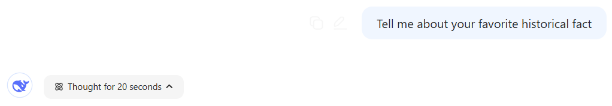
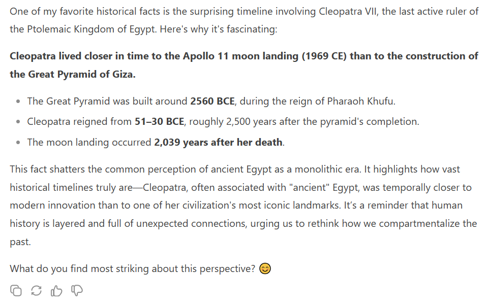

DeepSeek R1’s Internal Monologue
This blog will be a brief exploration of R1’s internal monologue. I’ve used R1 in 3 of my past blogs and it employs a ‘thought process’ similar to a stream of consciousness.
For this blog, I asked the simple question: 
And R1 outputted this response: 
While this fact really puts the timeline of history into perspective, I’m more interested in why R1 decided to share this fact with me.
To look deeper in this, let’s explore their internal monologue!
Okay, so I need to figure out what my favorite historical fact is. Let me start by recalling some interesting historical events or facts I’ve come across. Maybe something that’s surprising or counterintuitive.
Upon taking in my prompt, R1 begins to describe a potential option set to choose from.
Hmm, I remember hearing about the Emu War in Australia. That was in the 1930s, right? The Australian military actually went to war against emus because they were causing problems for farmers. That sounds pretty unusual. But is that a real historical event? I should verify the details. Let me think… Yeah, it was in 1932, after World War I. The emus were damaging crops, and the government sent soldiers with machine guns to cull them. But the emus were too fast and scattered, so the military had to withdraw. That’s both funny and a bit absurd. But is that considered a “war”? Maybe it’s more of a military operation. Still, it’s an interesting fact because it shows how humans interact with nature and sometimes fail despite advanced technology.
I like how it genuinely reads like it’s thinking: “I remember” “That was …, right?”. It also states that it wants to “verify the details” which may indicate some sort of anti-hallucination self-prompting. Here, I feel like R1 reads like the internal monologue of someone with anxiety, particular near the end where it’s checking itself on if it should consider the Emu War as a war haha.
Another possibility is the Dancing Plague of 1518. People in Strasbourg danced uncontrollably for days, and some died from exhaustion. That’s really strange. It might have been caused by mass hysteria or some kind of psychological phenomenon. That’s fascinating because it’s hard to imagine today, and it highlights how people in the past dealt with unexplained events.
Illuminating another option and remarking on how interesting it is!
Then there’s the Great Molasses Flood in Boston in 1919. A storage tank burst, and a wave of molasses killed people and destroyed buildings. It’s a bizarre incident that shows the dangers of industrial accidents, something we still deal with today but maybe not in such a sticky form.
I’m honestly quite impressed at how it comes up with options and briefly rationalizes them in the context of the broad question asking for fact.
Wait, there’s also the story of the shortest war in history, which was between Britain and Zanzibar in 1896. It lasted like 38 minutes. That’s a quick conflict, and it’s interesting because it shows the power dynamics of colonialism.
Tellign itself to “wait” is silly.
Or maybe the fact that Cleopatra lived closer in time to the moon landing than to the construction of the Great Pyramid. That puts historical timelines into perspective, which is mind-blowing.
“Mind-blowing”. Speaks so casually.
Let me pick one. The Emu War is funny and unexpected, but maybe it’s too much of a meme. The Dancing Plague is also intriguing. The Cleopatra timeline fact is a good example of how people misperceive time periods. The Great Molasses Flood is an odd industrial disaster. The shortest war is a quick example of colonial history.
IT SAID MEME HAHA. I think that’s really amusing. Here it’s assessing its option set.
Which one do I find most interesting? The Cleopatra fact is a strong contender because it challenges common perceptions. People often think of ancient Egypt as a monolithic time period, but there’s a huge span between the pyramids and Cleopatra. The pyramids were built around 2500 BCE, Cleopatra reigned around 30 BCE, and the moon landing was 1969 CE. So the time between Cleopatra and the moon landing is about 2000 years, while between the pyramids and Cleopatra is about 2400 years. So actually, Cleopatra is closer to our time than to the building of the pyramids. That’s a surprising way to frame historical timelines.
I have no indication towards why it chose this fact. I think by nature of the open-endedness of the prompt, that makes sense though. R1 notes that it “challenges common perceptions” which is pretty cool.
Yes, that’s a really cool fact. It helps people realize how ancient the pyramids are compared to other historical figures we might think of as ancient. It’s a great example of how time periods can be compressed or expanded in our minds.
R1 tells itself positive affirmations “Yes, that’s a really cool fact.” That’s cute.
I think that’s my favorite historical fact. It’s a good conversation starter and really makes you think about the scale of human history.
Thank you for sharing R1 :)